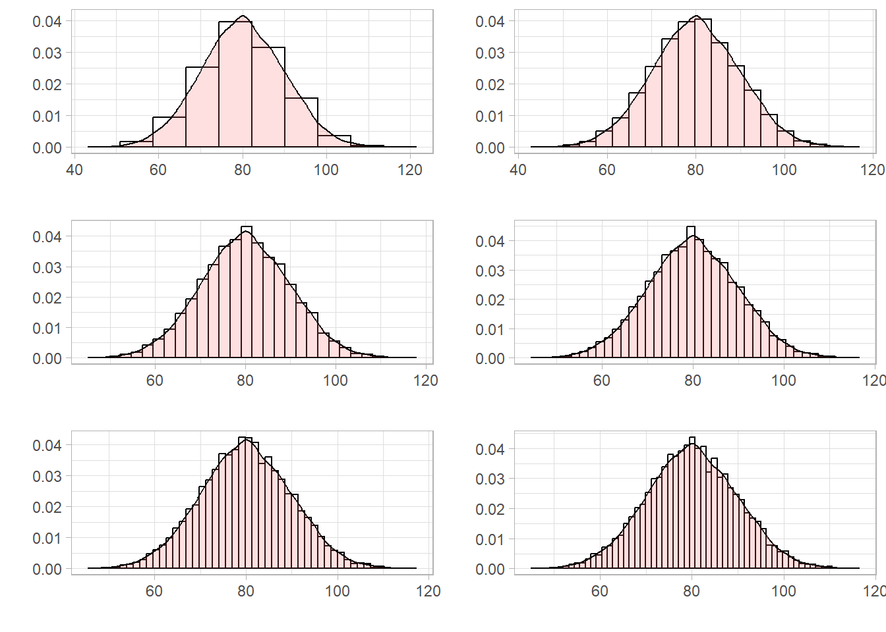
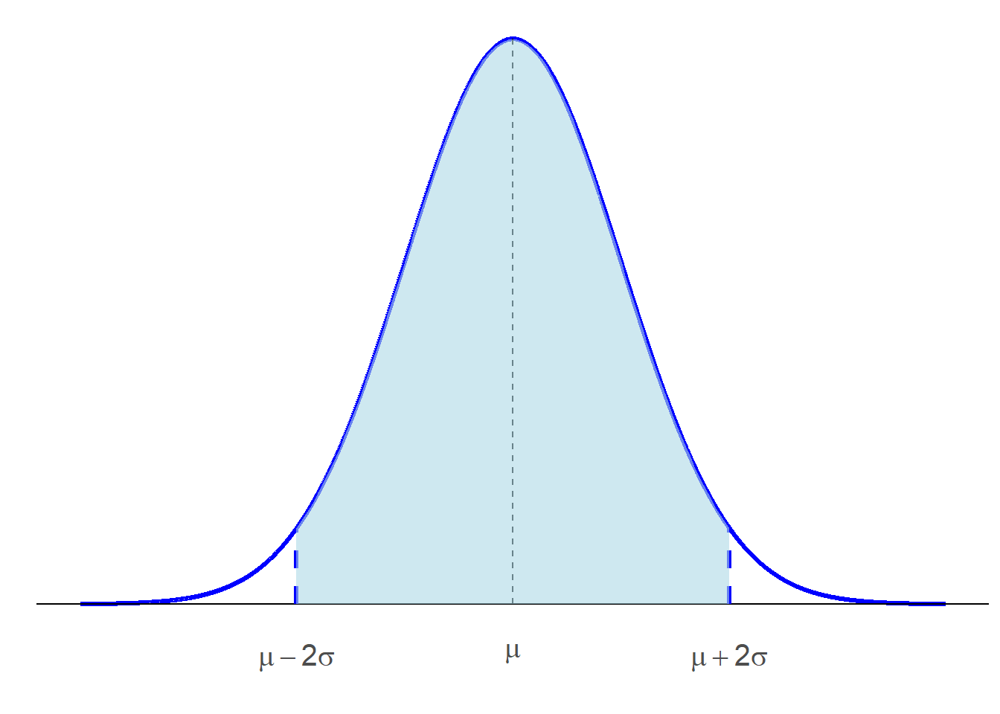
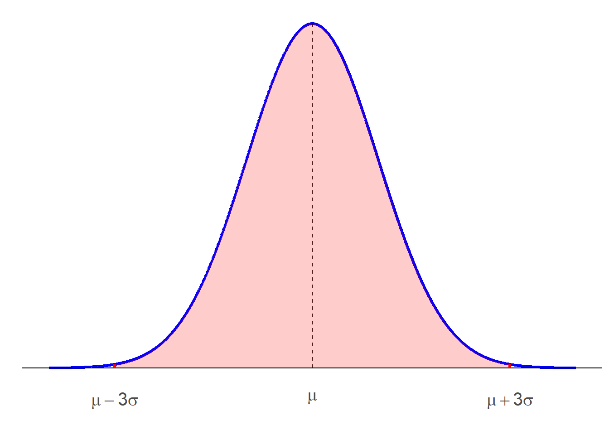
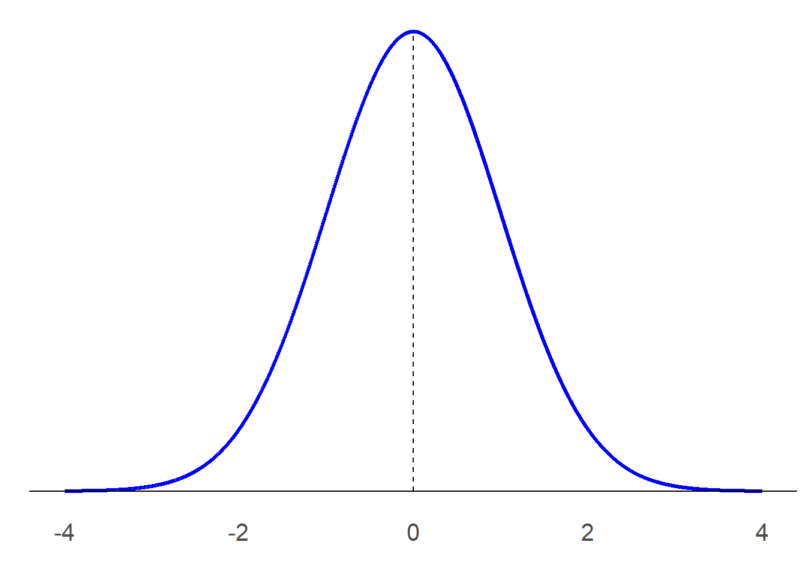
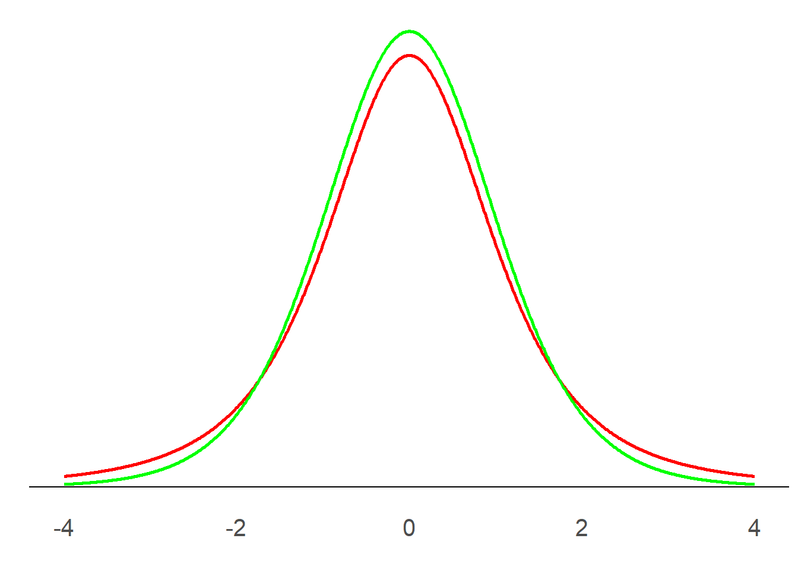

4 Distribuciones de probabilidad
En muchas situaciones cotidianas se utiliza con frecuencia el término probabilidad, este término es utilizado para expresar la posibilidad de obtener un resultado. Para sucesos aleatorios, la probabilidad de ese resultado se define como la proporción (frecuencia relativa) de veces que se obtiene el resultado en una extensa secuencia de observaciones. Aunque la probabilidad de un resultado cualquiera es una frecuencia relativa es decir que es un número entre \(0\) y \(1\) inclusive, es común representar la probabilidad como un porcentaje. Por ejemplo cuando leemos que en un día determinado la probabilidad de que llueva es del \(70\%\), se interpreta que en muchos días observados en el pasado con condiciones climáticas similares en \(70\%\) de esos días hubo precipitaciones.
Para definir formalmente la probabilidad, debemos tomar en cuenta algunas otras definiciones.
Definición 4.1 Un experimento es un procedimiento o proceso cuyos resultados son conocidos pero no predecibles.
Definición 4.2 Se define al espacio muestral como el conjunto de todos los posibles resultados de un experimento. El espacio muestral se representa con la letra griega Omega \(\Omega\).
Definición 4.3 Cualquier subconjunto del espacio muestral es conocido como un evento.
4.1 Operaciones de conjuntos
Supongamos los eventos \(E_1\), \(E_2\), \(\ldots\), \(E_n\) que son subconjuntos del espacio muestral \(\Omega\).
Definición 4.4 El evento \(E_1 \cup E_2\), consiste de todos los resultados presentes en \(E_1\) o \(E_2\)
Definición 4.5 El evento \(E_1 \cap E_2\), consiste de todos los resultados presentes en \(E_1\) y \(E_2\)
Definición 4.6 El conjunto \(\emptyset\) corresponde al conjunto vacío y es el conjunto que no contiene elementos dicho de otra forma. \(n\left(\emptyset\right) =0\)
Definición 4.7 Dos eventos \(E_1\) y \(E_2\) son mutuamente excluyentes, si y solo si \(E_1 \cap E_2 = \emptyset\)
Definición 4.8 Los eventos \(E_1\), \(E_2\), \(\ldots\), \(E_k\) son colectivamente exhaustivos si \(E_1 \cup E_2 \cup \ldots \cup E_k = \Omega\)
Definición 4.9 El complemento del evento \(E_1\) denotado por \(\overline{E_1}\) o \(E_1^C\), consiste de todos los resultados de \(\Omega\) que no pertenecen a \(E_1\)
4.2 Definición de probabilidad
Definición 4.10 Si un experimento tiene \(n(\Omega)\) resultados posibles y un evento \(E\) tiene \(n(E)\) resultados. La probabilidad de \(E\), denotada por \(P(E)\) se define por: \[P(E) = \dfrac{n(E)}{n(\Omega)} = \dfrac{\text{número de resultados en } E}{\text{número de resultados en } \Omega}\]
Axiomas de la Probabilidad
- \(P\left(\Omega\right)=1\)
- Para cualquier evento \(E\), \(0 \leq P(E) \leq 1\).
- Para cualquier evento \(E\), \(P(E^C)=1-P(E)\)
4.2.1 Algunas propiedades de la probabilidad
Propiedades de la Probabilidad
- Para dos eventos cualesquiera \(E_1\) y \(E_2\), \(P\left(E_1 \cup E_2 \right) = P\left(E_1\right)+P\left(E_2\right)- P\left(E_1 \cap E_2\right)\).
- Para dos eventos \(E_1\) y \(E_2\) mutuamente excluyentes, \(P\left(E_1 \cup E_2 \right) = P\left(E_1\right)+P\left(E_2\right)\).
- Para los eventos colectivamente exhaustivos \(E_1\), \(E_2\), \(\ldots\) y \(E_k\), \(P\left(E_1 \cup E_2 \cup \ldots \cup E_k \right)= 1\).
4.3 Distribuciones de probabilidad
En esta sección abordaremos las distribuciones de probabilidad a las que nos referiremos en los siguientes capítulos. Es necesario para empezar, introducir el concepto de variable aleatoria.
4.3.1 Variable aleatoria y distribución de probabilidad
Consideremos un experimento donde lanzamos tres monedas y observamos los resultados. Podemos representar todos los eventos posibles:
- Cara en la primera moneda, cara en la segunda y cara en la tercera.
- Cara en la primera moneda, cara en la segunda y sello en la tercera.
- Cara en la primera moneda, sello en la segunda y cara en la tercera.
- Cara en la primera moneda, sello en la segunda y sello en la tercera.
- Sello en la primera moneda, cara en la segunda y cara en la tercera.
- Sello en la primera moneda, cara en la segunda y sello en la tercera.
- Sello en la primera moneda, sello en la segunda y cara en la tercera.
- Sello en la primera moneda, sello en la segunda y sello en la tercera
Pero podríamos también hacer una lista de estos eventos en una forma diferente, en lugar de definir cada evento indicando el resultado de cada moneda, podemos contar el número de caras o sellos. Por ejemplo si trabajamos con el número de sellos, los eventos son:
- 0 sellos
- 1 sello
- 1 sello
- 2 sellos
- 1 sellos
- 2 sellos
- 2 sellos
- 3 sellos
El número de sellos recibe el nombre de variable aleatoria, las variables aleatorias pueden ser representadas con letras mayúsculas (Uboe, 2017). Definamos a \(X\) como la variable aleatoria número de sellos. Además nos interesará la probabilidad \(P\) de cada valor posible de \(X\). En este caso los valores posibles de \(X\) son \(0\), \(1\), \(2\) y \(3\).
La probabilidad se la calcula de forma fácil como el número de resultados favorables sobre el número de resultados posibles. Por ejemplo si queremos obtener en este caso \(P\left(X =2 \right)\), el número de resultados favorables es \(3\) porque en tres oportunidades se pueden obtener 2 sellos, mientras que el número de resultados posibles es 8, en términos matemáticos \(P\left(X=2\right)= \frac{3}{8}\).
Formalmente podemos definir a una variable aleatoria como una regla o función que asigna un número a cada resultado de un experimento. Existen dos tipos de variables aleatorias las discretas y las continuas, las primeras se usan cuando los valores que puede tomar la variable son contables y las continuas se utilizan cuando los valores posibles de la variable son incontables.
Un ejemplo de variable aleatoria continua puede ser el tiempo de llenado de un silo. Puede ocurrir que el silo sea de una dimensión mínima y le tome al menos 30 minutos mientras que otro silo de mayor dimensión tome máximo 5 horas en ser llenado. Sea \(X= \text{tiempo en minutos para llenar un silo}\) con el valor mínimo 30 y el máximo de 300. Si intentamos contar el número posible de valores que puede tomar \(X\), empezamos por el valor mínimo que es \(30\) y luego buscamos el valor que sigue de \(30\) ¿cuál es el valor que sigue de 30 en este caso? ¿31? ¿30.5? ¿30.05? ¿30.005? no podemos determinar el siguiente valor porque entre \(30\) y \(30.005\) por ejemplo existe una cantidad infinita de valores. Por lo tanto no podemos contar el número de valores posibles de \(X\), y \(X\) es continua.
Una distribución de probabilidad es una tabla, fórmula o gráfico que describe los valores de una variable aleatoria y la probabilidad asociada a estos valores.
4.3.2 Funciones de Densidad de Probabilidad
Retomemos la variable aleatoria \(X= \text{tiempo en minutos para llenar un silo}\). Si graficamos un histograma de frecuencias relativas, la altura de cada barra representa la proporción o porcentaje de valores en cada clase y la suma de todas las áreas es \(1\). Si el tamaño de la muestra aumenta, se puede reducir la longitud de cada clase y la altura va formando una curva más suave. La curva a la que se aproxima recibe el nombre de curva de densidad como se ve en la Figura 4.1.
La densidad de la probabilidad puede ser descrita por una expresión matemática \(f\left(x\right)\), que recibe el nombre de distribución de probabilidad o función de densidad de probabilidad. Las funciones de densidad de probabilidad de variables continuas cumplen con algunas propiedades:
- El área bajo la distribución de probabilidad es igual a \(1\)
- La probabilidad de que \(X\) se encuentre en determinado intervalo \(\left(a,b\right)\) es igual al área bajo la curva entre los dos puntos \(a\) y \(b\).
- \(P\left(X=c\right)=0\) para cualquier valor \(c\) para el que se encuentre definida la función de probabilidad.
4.4 Distribución de Probabilidad Normal
La distribución de probabilidad más usada para describir variables aleatorias continuas es la distribución de probabilidad normal. Esta distribución se la puede encontrar en variables como la altura de personas, altura de plantas, los pesos de animles, calificaciones, mediciones científicas, cantidad de lluvia, etc.
La distribución normal tiene la forma de una campana, como se observa en la figura Figura 4.2
La función de densidad de probabilidad de la distribución normal es:
\[ f\left(x\right)=\dfrac{1}{\sigma\sqrt{2\pi}}e^{\dfrac{-\left(x-\mu\right)^2}{2\sigma^2}} \tag{4.1}\]
como se puede observar en la ecuación Ecuación 4.1, la distribución normal tiene dos parámetros la media \(\mu\) y la desviación \(\sigma\) cuando una variable aleatoria \(X\) tiene una distribución normal se escribe \(X \sim \mathcal{N}\left(\mu,\sigma \right)\), y se observan las siguientes propiedades de acuerdo a estos parámetros.
- La distribución normal alcanza su máximo en la media, que se ubica en el centro de la curva por esta razón se dice que la distribución normal es simétrica respecto a la media.
- La media es un parámetro de localización, en la Figura 4.3 se observan tres distribuciones normales con la misma desviación pero diferentes medias.
- La desviación es un parámetro que afecta a la forma de la curva, a mayor desviación la curva se acerca hacia el eje de las \(X\) o se “aplana”. Y a menor desviación la curva se “estrecha”. Este comportamiento se aprecia en la Figura 4.4
- El porcentaje de valores en algunos intervalos que se usan comúnmente son:
- \(68.3\%\) de los valores de una variable normal aleatoria se encuentran a más o menos una desviación de la media, como se muestra en la figura Figura 4.5
- \(95.4\%\) de los valores de una variable normal aleatoria se encuentran a más o menos dos desviaciones de la media, como se muestra en la figura Figura 4.6
- \(99.7\%\) de los valores de una variable normal aleatoria se encuentran a más o menos tres desviaciones de la media, como se muestra en la figura Figura 4.7


4.4.1 Distribución Normal Estándar
Supongamos que el tiempo para llenar un silo se distribuye normalmente con media \(80\) y desviación \(20\) y que nos interesa determinar la probabilidad de que un silo se llene entre 50 y 90 minutos. Formalmente si definimos a \(X=\text{Tiempo para llenar un silo}\) podemos decir que \(X \sim \mathcal{N}\left(80,20\right)\), nuestro interés es calcular \(P\left(50< X <90\right)\) si hacemos el cálculo a mano, debemos determinar el área bajo la función definida en la ecuación Ecuación 4.1 entre \(50\) y \(90\) para \(\mu=80\) y \(\sigma=20\) esto requeriría de un trabajo fuerte desde el punto de vista matemático.
Otra solución sería tener una tabla que contenga las probabilidades de la distribución normal, pero existe una cantidad infinita de distribuciones normales tomando en cuenta las combinaciones posibles de \(\mu\) y \(\sigma\). La solución es tener una distribución normal que represente a todas las distribuciones normales, dicha distribución recibe el nombre de distribución normal estándar.
La distribución normal estándar se caracteriza por tener media \(0\) y desviacion \(1\), y se representa con la letra \(Z\). Dicho de otra forma \(Z \sim \mathcal{N}\left(0,1\right)\). En la figura Figura 4.8 se presenta el gráfico de la normal estándar. Cualquier variable normal \(X\sim \mathcal{N}\left(\mu,\sigma\right)\) se puede transformar a una normal estándar (estandarizar) realizando la operación:
\[ z=\dfrac{x-\mu}{\sigma} \tag{4.2}\]
Una vez estandarizado se puede determinar la probabilidad deseada usando cualquier tabla de la normal estándar. En este texto no hacemos uso de tablas puesto que los cálculos de probabilidades los haremos utilizando R, es importante que el lector aprenda o refresque la noción de la distribución normal estándar ya que aparecerá constantemente en los siguientes capítulos.

4.5 Distribución \(t\) de Student
La distribución \(t\) de Student fue obtenida por William S. Gosset en 1908, quien publicó sus hallazgos bajo el seudónimo “Student” y usó la letra \(t\) para representar la variable aleatoria, de aquí la distribución \(t\) de Student o \(t\) de Student simplemente. La función de densidad de la distribución \(t\) se define
\[ f\left(t\right)=\dfrac{\Gamma\left[\dfrac{\nu+1}{2}\right]}{\sqrt{\nu \pi} \; \Gamma\left(\dfrac{\nu}{2}\right)}\left[1 + \dfrac{t^2}{\nu} \right]^{\frac{\nu+1}{2}} \tag{4.3}\]
donde \(\nu\), (la letra griega nu) representa el parámetro de la distribución \(t\) llamado grados de libertad y \(\Gamma\) es la función Gamma cuya definición no será abordada en este texto. En la figura Figura 4.9 se muestra el gráfico de dos distribuciones \(t\) de Student para dos valores diferentes de grados de libertad, la curva de color rojo representa una \(t\) con 3 grados de libertad y la de color verde con \(9\) grados de libertad. Se puede observar que la distribución \(t\) tiene una forma similar a la normal estándar porque es simétrica respecto a \(0\) (lo que implica que la media es \(0\)) y tiene forma de campana.
En la figura Figura 4.10 se muestra de color azul la curva de la normal estándar junto con las distribuciones \(t\) mostradas anteriormente se observa que las \(t\) tienen más probabilidad en las colas y menos en el centro. Además se puede observar que \(t\) se aproxima a \(z\) a medida que aumentan los grados de libertad, los grados de libertad están relacionados al tamaño muestral por lo que \(t\) converge a \(z\) para tamaños muestrales grandes.
